تصنيف الإشعاع ومصادر الإشعاع المؤين
Classification of Radiation and Identification of Ionizing Radiation Sources
الإشعاعRadiation
Radiation is classified into two main types: ==ionizing and non-ionizing.==
يُصنَّف الإشعاع إلى نوعين رئيسين: ==مؤيِّن [[ionizing]] وغير مؤيِّن [[non-ionizing]].==
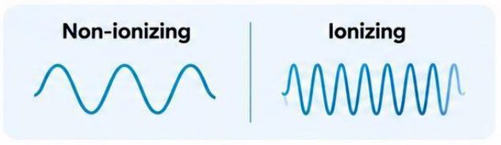
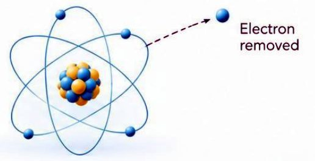
تصنيف الإشعاع المؤيِّنClassification of Ionizing Radiation
Ionizing Radiation can be classified into ==two main groups==:
يمكن تصنيف الإشعاع المؤيِّن إلى ==مجموعتين رئيستين==:
أمثلةExamples
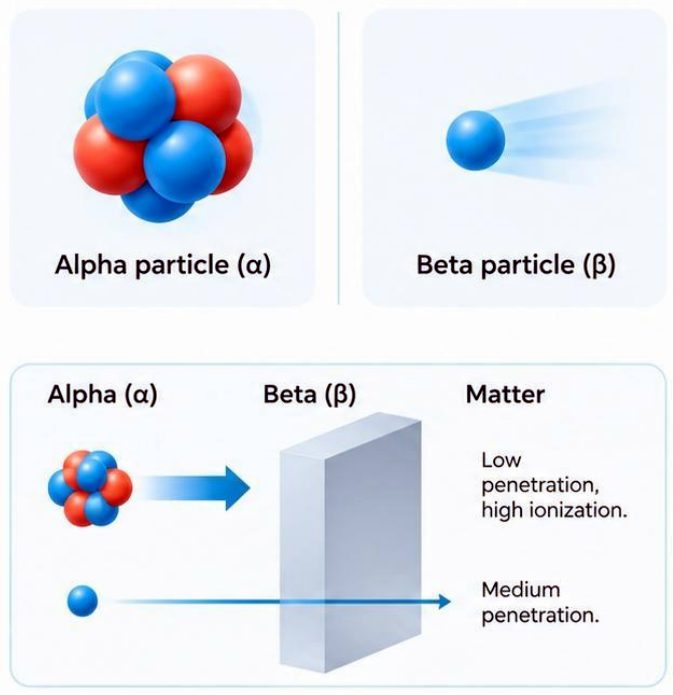
أمثلةExamples
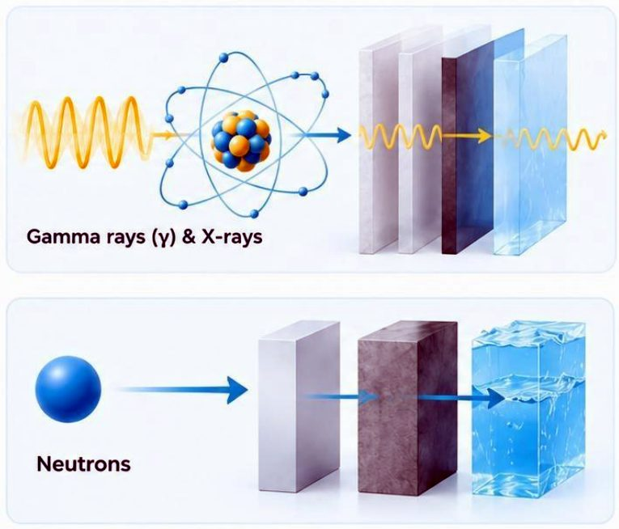
قدرة الاختراق للإشعاع المؤيِّنPenetrating Power of Ionizing Radiation
This diagram illustrates the penetrating power of ionizing radiation:
يوضّح هذا المخطط قدرة الاختراق للإشعاع المؤيِّن:
- • ==Alpha (α) stopped by paper.====جسيمات ألفا (α) يوقفها الورق.==
- • ==Beta (β) stopped by aluminum.====جسيمات بيتا (β) يوقفها الألمنيوم.==
- • ==Gamma (γ) penetrates deeply (needs lead/concrete).====أشعة غاما (γ) تخترق بعمق (تحتاج إلى الرصاص أو الخرسانة).==
- • ==Neutrons (n): very high penetration, slowed by water/paraffin.====النيوترونات (n): اختراقها عالٍ جداً، ويُبطئها الماء أو البارافين.==
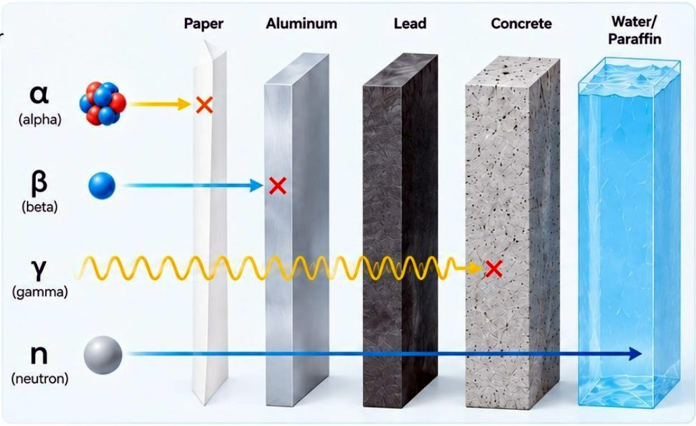
مصادر الإشعاع المؤيِّنSources of Ionizing Radiation
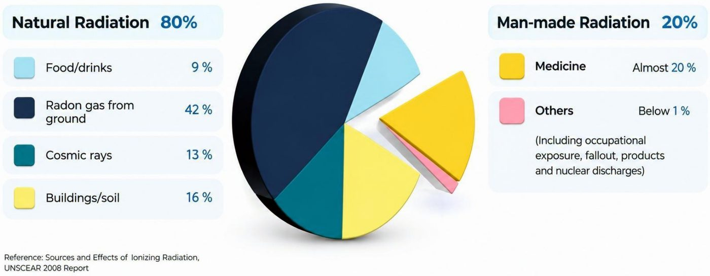
Reference: Sources and Effects of Ionizing Radiation, UNSCEAR 2008 Report
المرجع: مصادر الإشعاع المؤيِّن وتأثيراته، تقرير {{UNSCEAR}} لعام 2008 (اللجنة العلمية للأمم المتحدة المعنية بآثار الإشعاع الذري).
المصادر الصناعية للإشعاعArtificial sources of radiation
- • ==X-ray, CT scan, nuclear medicine, and a particle accelerator that produce isotopes.====الأشعة السينية، والتصوير المقطعي {{CT}} (المفراس)، والطب النووي، ومُسرِّع الجسيمات الذي ينتج النظائر.==
- • Nuclear gauges, a smoke detector, and glow in the dark exit sign.المقاييس النووية، وكاشف الدخان، ولافتة الخروج المتوهّجة في الظلام.
- • Uranium mining, yellowcake, fuel rods and a nuclear power plant.تعدين اليورانيوم، والكعكة الصفراء (مركّز اليورانيوم)، وقضبان الوقود، ومحطة الطاقة النووية.
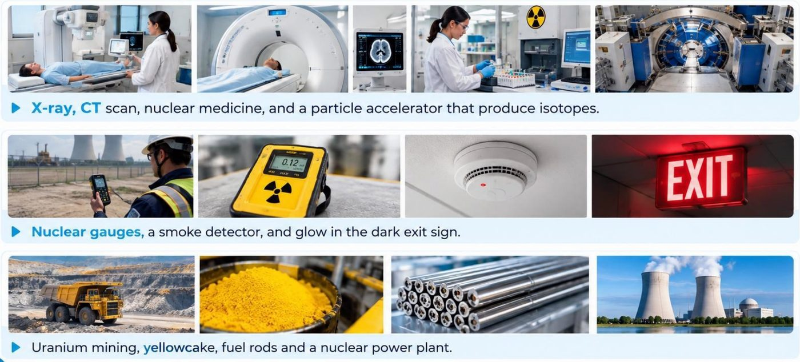
الإشعاع غير المؤيِّنNon-ionizing Radiation
This type of radiation ==does not carry enough energy to ionize atoms or molecules==, meaning it ==cannot remove electrons from atoms.==
هذا النوع من الإشعاع ==لا يحمل طاقة كافية لتأيين الذرات أو الجزيئات==، أي إنه ==لا يستطيع انتزاع الإلكترونات من الذرات.==
Examples of non-ionizing radiation include:
من أمثلة الإشعاع غير المؤيِّن:
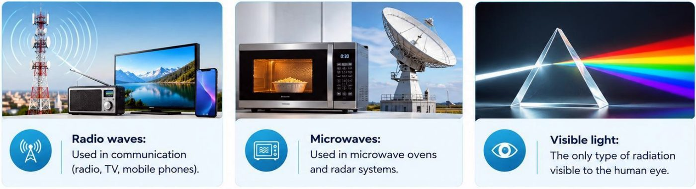
مصادر الإشعاع غير المؤيِّنSources of non-ionizing radiation
Cellular telephones, Microwave ovens, television stations, FM and AM radio
الهواتف الخلوية، وأفران المايكروويف، ومحطات التلفاز، وراديو {{FM}} و{{AM}}.
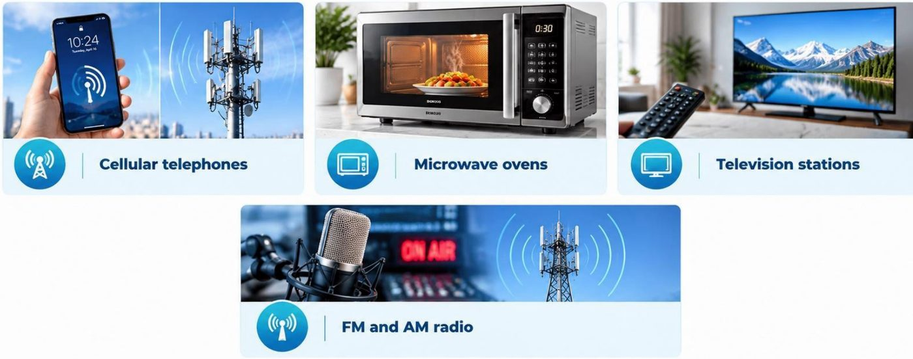
التعرّض للإشعاعRadiation Exposures
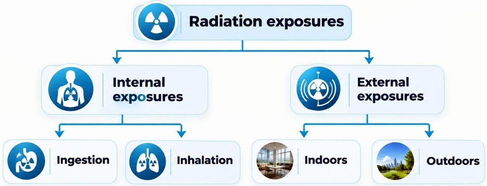
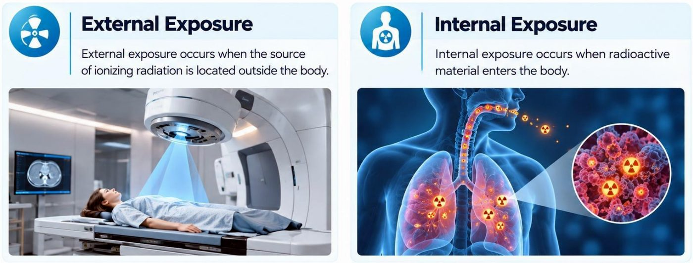
مقارنة جرعات الإشعاعComparison of Radiation Doses
Source / Activity — Approx. Dose (mSv)
الجرعة التقريبية بوحدة {{mSv}} (ملّي سيفرت: جزء من ألف من السيفرت {{Sievert (Sv)}}، وهو وحدة الجرعة المكافئة والفعّالة) لكل مصدر أو نشاط:
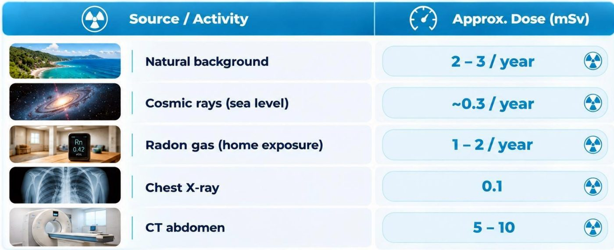


🎧 المحاضرة مسموعة
نص الأستاذ بالإنكليزي مثل الأصل · 2.3 دقيقة. اضغط أي جملة تسمعها، أو مصطلح منقّط تسمع لفظه ومعناه.
Radiationالإشعاع
Radiation
Energy in the form of particles or electromagnetic waves.
Radiation is classified into two main types: ionizing and non-ionizing.
Radiation with sufficient energy to remove an electron from an atom or molecule.
Classification of Ionizing Radiationتصنيف الإشعاع المؤيِّن
Classification of Ionizing Radiation
Ionizing Radiation can be classified into two main groups:
(These radiations consist of charged particles. They can directly interact with matter and produce ionization).
Examples
(These radiations are uncharged and produce ionization mainly by generating secondary charged particles).
Examples
Penetrating Power of Ionizing Radiationقدرة الاختراق للإشعاع المؤيِّن
Penetrating Power of Ionizing Radiation
This diagram illustrates the penetrating power of ionizing radiation:
Alpha (α) stopped by paper.
Beta (β) stopped by aluminum.
Gamma (γ) penetrates deeply (needs lead/concrete).
Neutrons (n): very high penetration, slowed by water/paraffin.
Sources of Ionizing Radiationمصادر الإشعاع المؤيِّن
Sources of Ionizing Radiation
Reference: Sources and Effects of Ionizing Radiation, UNSCEAR 2008 Report
Artificial sources of radiation
X-ray, CT scan, nuclear medicine, and a particle accelerator that produce isotopes.
Nuclear gauges, a smoke detector, and glow in the dark exit sign.
Uranium mining, yellowcake, fuel rods and a nuclear power plant.
Non-ionizing Radiationالإشعاع غير المؤيِّن
Non-ionizing Radiation
This type of radiation does not carry enough energy to ionize atoms or molecules, meaning it cannot remove electrons from atoms.
Examples of non-ionizing radiation include:
Sources of non-ionizing radiation
Cellular telephones, Microwave ovens, television stations, FM and AM radio
Radiation Exposuresالتعرّض للإشعاع
Radiation Exposures
External exposure occurs when the source of ionizing radiation is located outside the body.
Internal exposure occurs when radioactive material enters the body.
Comparison of Radiation Dosesمقارنة جرعات الإشعاع
Comparison of Radiation Doses
Source / Activity — Approx. Dose (mSv)
20 سؤال من نص المحاضرة، ويّا «ليش صح» بعد كل جواب.
ابدأ الاختباراضغط أي مصطلح منقّط تسمع لفظه ومعناه.
PDF ثنائي اللغة: نص الأستاذ + الترجمة + الخلاصة + الأسئلة · 1.5 MB
تحميل الملف